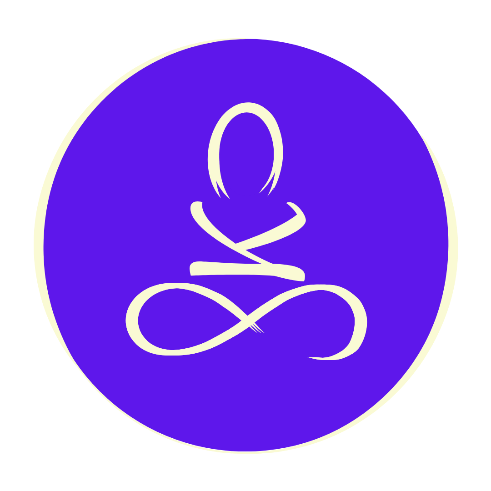
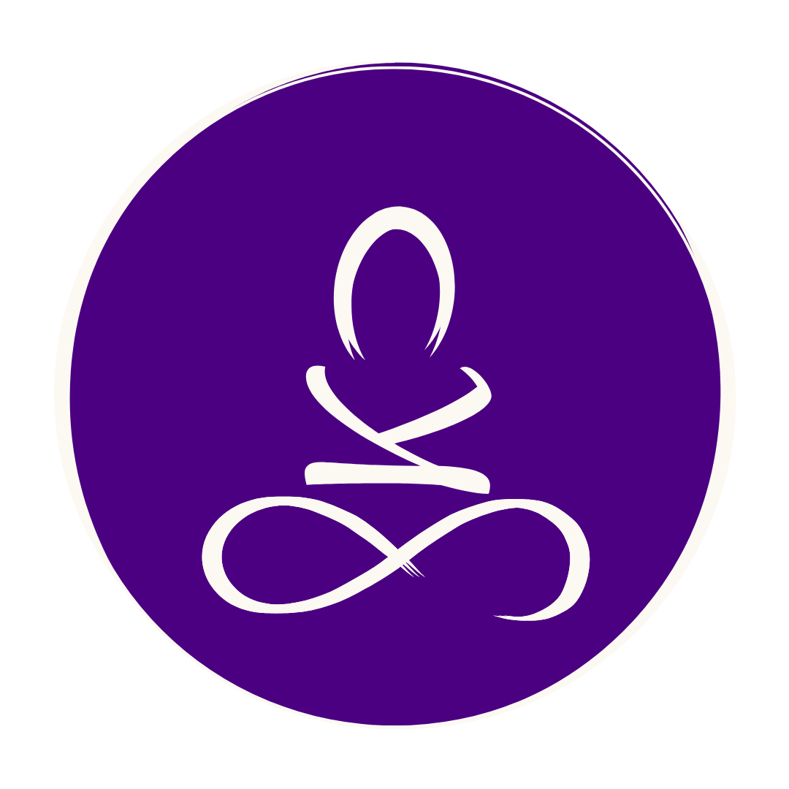
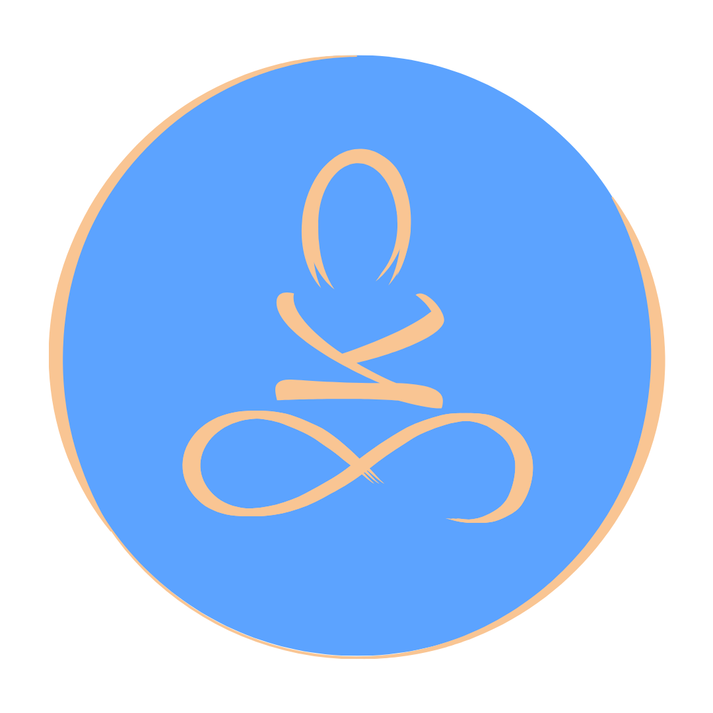
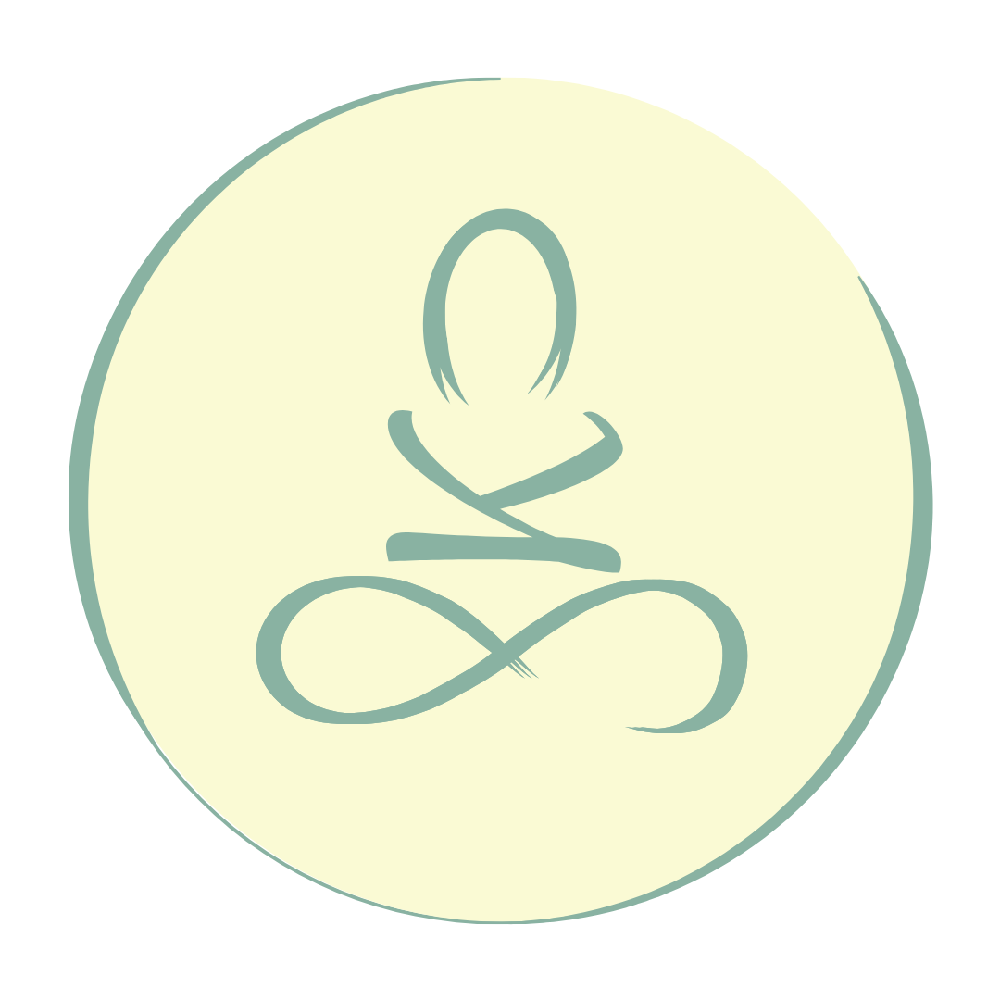
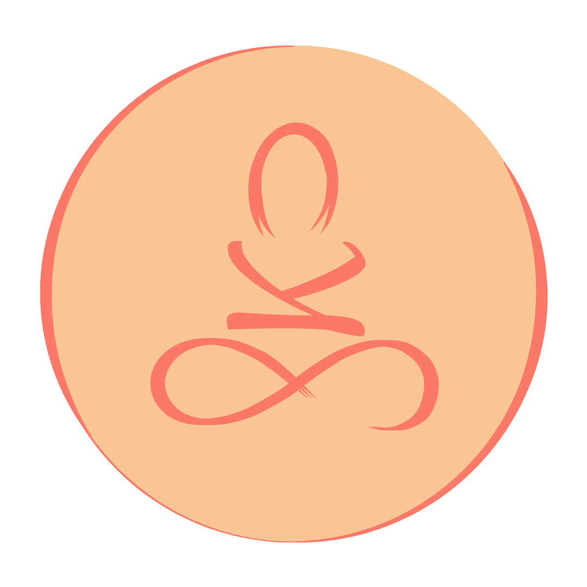
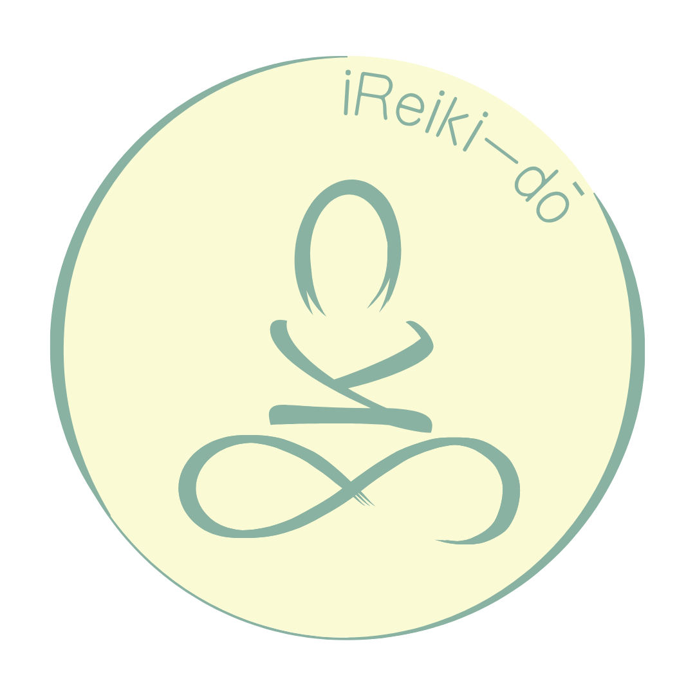

Bienvenida/o al Templo
Un espacio para nutrir tu energía vital y encontrar el equilibrio que mereces.
ESTAMOS PREPARANDO TU EXPERIENCIA...






Un espacio para nutrir tu energía vital y encontrar el equilibrio que mereces.




